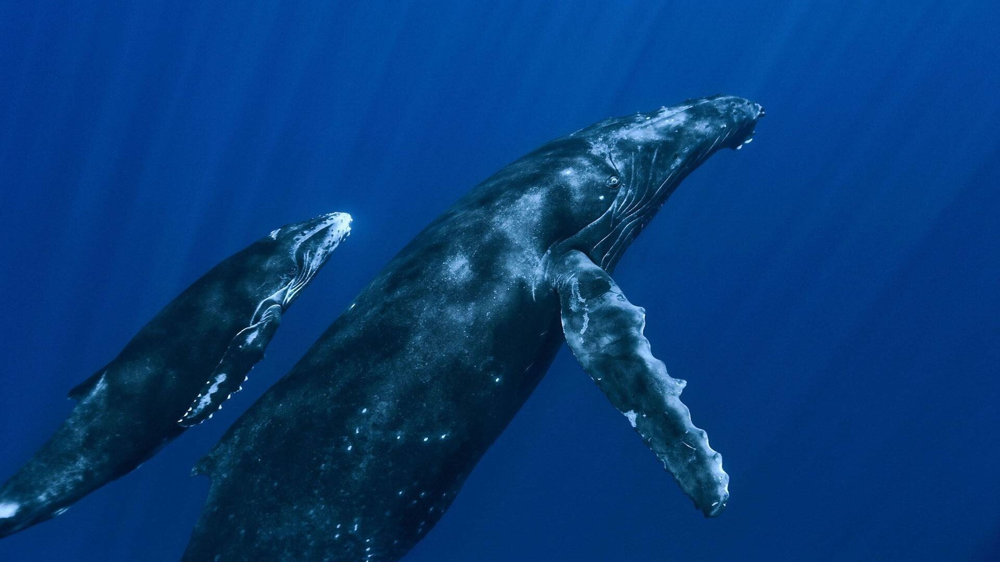

5 Rare and Endangered Animals Around the Globe
Blue Whale
|  |
The blue whale (Balaenoptera musculus) is a marine mammal and a baleen whale. Reaching a maximum confirmed length of 29.9 meters (98 ft) and weighing up to 199 tonnes (196 long tons; 219 short tons), it is the largest animal known ever to have existed. The blue whale's long and slender body can be of various shades of greyish-blue dorsally and somewhat lighter underneath. Four subspecies are recognized: B. m. musculus in the North Atlantic and North Pacific, B. m. intermedia in the Southern Ocean, B. m. brevicauda (the pygmy blue whale) in the Indian Ocean and South Pacific Ocean, B. m. indica in the Northern Indian Ocean. There is also a population in the waters off Chile that may constitute a fifth subspecies. In general, blue whale populations migrate between their summer feeding areas near the poles and their winter breeding grounds near the tropics. There is also evidence of year-round residencies, and partial or age/sex-based migration. Blue whales are filter feeders; their diet consists almost exclusively of krill. They are generally solitary or gather in small groups, and have no well-defined social structure other than mother-calf bonds. The fundamental frequency for blue whale vocalizations ranges from 8 to 25 Hz and the production of vocalizations may vary by region, season, behavior, and time of day. Orcas are their only natural predators. The blue whale was once abundant in nearly all the Earth's oceans until the end of the 19th century. It was hunted almost to the point of extinction by whalers until the International Whaling Commission banned all blue whale hunting in 1966. The International Union for Conservation of Nature has listed blue whales as Endangered as of 2018. It continues to face numerous man-made threats such as ship strikes, pollution, ocean noise and climate change. |
TaxonomyThe genus name, Balaenoptera, means winged whale while the species name, musculus, could mean "muscle" or a diminutive form of "mouse", possibly a pun by Carl Linnaeus when he named the species in Systema Naturae. One of the first published descriptions of a blue whale comes from Robert Sibbald's Phalainologia Nova, after Sibbald found a stranded whale in the estuary of the Firth of Forth, Scotland, in 1692. The name "blue whale" was derived from the Norwegian "blåhval", coined by Svend Foyn shortly after he had perfected the harpoon gun. The Norwegian scientist G. O. Sars adopted it as the common name in 1874. Blue whales were referred to as 'Sibbald's rorqual', after Robert Sibbald, who first described the species. Herman Melville called the blue whale "sulphur bottom" in his novel Moby Dick because of the accumulation of diatoms creating a yellowish appearance on their pale undersi |
|
testtest |
|
Subspecies and stocksAt least four subspecies of blue whale are recognized, some of which are divided into population stocks or "management units". They have a worldwide distribution, but are mostly absent from the Arctic Ocean and the Mediterranean, Okhotsk, and Bering Sea. Northern subspecies (B. m. musculus) North Atlantic population - This population is mainly documented from New England along eastern Canada to Greenland, particularly in the Gulf of St. Lawrence, during summer though some individuals may remain there all year. They also aggregate near Iceland and have increased their presence in the Norwegian Sea. They are reported to migrate south to the West Indies, the Azores and northwest Africa. Eastern North Pacific population - Whales in this region mostly feed off California from summer to fall and then Oregon, Washington State, the Alaska Gyre and Aleutian Islands later in the fall. During winter and spring, blue whales migrate south to the waters of Mexico, mostly the Gulf of California, and the Costa Rica Dome, where they both feed and breed. Central/Western Pacific population - This stock is documented around the Kamchatka Peninsula during the summer; some individuals may remain there year-round. They have been recorded wintering in Hawaiian waters, though some can be found in the Gulf of Alaska during fall and early winter. Northern Indian Ocean subspecies (B. m. indica) - This subspecies can be found year-round in the northwestern Indian Ocean, though some individuals have recorded travelling to the Crozet Islands during between summer and fall. Pygmy blue whale (B. m. brevicauda) Madagascar population - This population migrates between the Seychelles and Amirante Islands in the north and the Crozet Islands and Prince Edward Islands in the south were they feed, passing through the Mozambique Channel. Australia/Indonesia population - Whales in this region appear to winter off Indonesia and migrate to their summer feeding grounds off the coast of Western Australia, with major concentrations at Perth Canyon and an area stretching from the Great Australian Bight and Bass Strait. Eastern Australia/New Zealand population - This stock may reside in the Tasman Sea and the Lau Basin in winter and feed mostly in the South Taranaki Bight and off the coast of eastern North Island. Blue whales have been detected around New Zealand throughout the year. Antarctic subspecies (B. m. intermedia) - This subspecies includes all populations found around the Antarctic. They have been recorded to travel as far north as eastern tropical Pacific, the central Indian Ocean, and the waters of southwestern Australia and northern New Zealand. Blue whales off the Chilean coast may be a separate subspecies based on geographic separation, genetics, and unique song types. Chilean blue whales may overlap in the Eastern Tropical Pacific with Antarctica blue whales and Eastern North Pacific blue whales. Chilean blue whales are genetically differentiated from Antarctica blue whales and are unlikely to be interbreeding. However, the genetic distinction is less with the Eastern North Pacific blue whale and there may be gene flow between hemispheres. |
|
Fun Factfun fact |